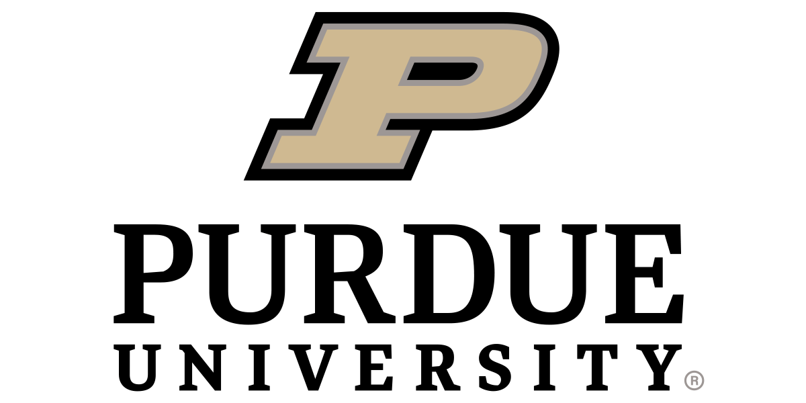
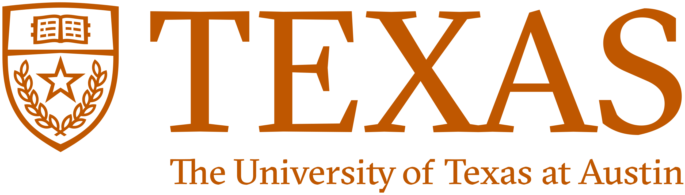
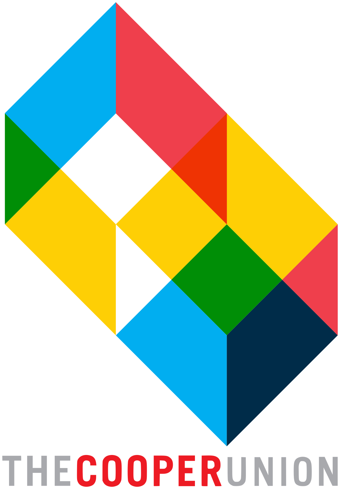

| Home | Organizers | Program | Register | UAVCC |
Aerial robotics is increasingly gaining more attention as it gives rise to new possibilities in a wide range of applications such as package delivery, wildlife monitoring, and disaster management. However, the science and technology behind such systems have yet to catch up with the expectations of their efficiency, safety, reliability, and agility. This workshop aims to set up a nexus of ideas on safe navigation for aerial robotics, create a unified understanding of the current and future challenges, and build dialogue among different communities to spark new interdisciplinary research. The workshop brings together expert researchers and practitioners working on diverse aspects of aerial robotics, including, path planning, perception, robust control, agile maneuvering, online adaptation, and multi-agent systems, from simulation to deployment.
As part of a National Science Foundation CCRI grant, researchers have extended the capabilities of the Purdue UAS Research and Test Facility (PURT) to include a virtual recreation of the facility using the Gazebo simulator. This virtual environment has enabled PURT to host competitions and support research projects in a hybrid mode (both virtual and in person). For one such competition, UAV Chase Challenge 2022, international teams were given an accurate position of their aerial robot using a motion capture system and were tasked with object detection, path planning, and obstacle avoidance to follow a rover through a cluttered environment. Due to the COVID-19 pandemic, the competition benefited greatly from the simulation environment for rapid prototyping and testing. This workshop seeks to provide a place for researchers to publish their work that has leveraged simulation in the process to eventual deployment of an Aerial robots.
|  |  |
|
 |